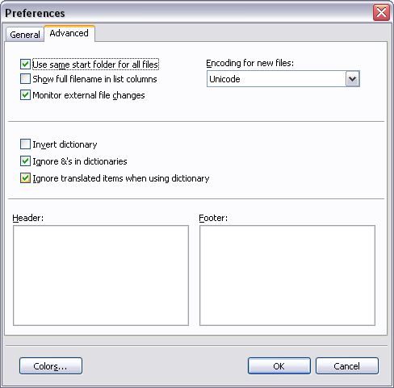
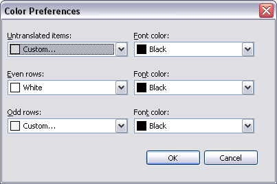

The Preferences Dialog
Select Preferences (Alt+Enter) from the menu to display the Preferences
dialog.
The General tab:

The available options on this tab are:
-
Show Quotes
-
The Show Quotes options can be used to easier see where strings starts and ends. This is
particularily important when the string contains leading and trailing white-space. Since
the program normally trims off trailing (but not leading) spaces, the Show Quotes option is
the only way to preserve trailing spaces. The quotes are for display purpose only: they are
not saved with the string. If you inadverently delete one or both of the quotes this is
alright too: the program detects that the quote(s) are missing and adjusts
accordingly.
-
You can also enable/disable this option from the main menu (Ctrl+Q)
without opening this dialog.
-
Show details
-
If enabled, displays a panel beneath the toolbar that shows the Section and Key of the
currently selected item.
-
You can also enable/disable this option from the main menu (Ctrl+D)
without opening this dialog.
-
Show tooltips
-
Display tooltip windows for toolbar buttons.
-
Show shortcuts in tooltips
-
Displays the shortcut of the toolbar button in the tooltip. This option can only be changed
if Show tooltips is enabled.
-
Remember form position
-
Enable this option if you want the program to remember the main windows position when you
close it.
-
Remember min/max state
-
Enable this option if you want the program to remember if the window was
minimized/maximized as well. This option can only be changed if Remember form
position is enabled.
-
Press RETURN to confirm translation
-
Normally, a translation is saved as soon as you move to another item. Enable this option to
use the RETURN (ENTER) key to confirm the translation without having to move to another
item.
-
Automatically move to next/previous
-
Enable this option to automatically move to the next item when RETURN is pressed. Press
Shift+RETURN to move to the previous item instead. This option can only be changed if
Press RETURN to confirm translation is enabled.
-
Use translation everywhere
-
When activated, a newly typed translation will be copied to all other items with an
identical original identifier. This is like using the "Use translation everywhere" command
without having to press Ctr+Shift+H all the time.
-
Autofocus translation when typing
-
When activated, typing in the list will move focus to the translation field where your
typing replaces the selected text.
-
Font
-
Changes the font used by the edit fields and the listview in the program. Use the drop down
lists to select a font and a size. Click in the preview to edit the preview text. Click
again to return to preview mode. Change the preview text to an empty string to restore the
default display (font name and size).
-
Language
-
Select or type in the path and filename of the language file yu want to use for the
program. Click the browse button (...) to show a dialog that allows you to select a file.
Restart the program to use the selected language file.
-
Help
-
Select the file to be used as the help file for the program. Click the browse button (...)
to show a dialog that allows you to select a file. Press F1 in the program
to display the help file. Note that you can select any type of file as the help file, not
only chm or hlp files. When you press F1, the file will be opened with the program
associated with the selected file type.
The Advanced tab:
-

The available options on the Advanced tab are:
-
Use same start folder for all files
-
Enable this option if you want the open translation dialog to "chase" the original dialog
(and vice versa). This can be hard too understand, but an example might clear it up:
-
Let's say you have a couple of files opened in your C:\Program
Files\Translations folder. Now you want to open another set of files in the
D:\Other\Translations folder instead. Click Open Original
(Ctrl+O) and browse to the D:\Other\Translations and select a file
as usual.
Next, a dialog is shown for the translation file. With the "same folder" option enabled,
the start folder for the dialog will be D:\Other\Translations. With the
option disabled, the start folder will be C:\Program
Files\Translations.
-
Show full filename in list columns
-
Check this option if you want the list columns to display the path as well as the filename.
-
Monitor external file changes
-
Turns file monitoring on or off. If enabled, external changes to the currently loaded files
(original, translation and dictionary) are monitored and you are prompted to reload the
file(s) when they have changed.
-
Encoding for new files
-
Select the encoding to use when creating a new translation file. You can choose between
ANSI, UTF-8 and Unicode.
-
Ignore translated items when using dictionary
-
When active, already translated items are skipped when using the dictionary. This option
can also be changed from the dialog used when using the dictionary.
-
Invert dictionary
-
Same as the Invert diitionary on the main menu. Enabling this option swaps the currently
loaded items in the dictionary so you can use the dictionary to translate "the other way"
as well. Note that the inversion stays in effect if you save the dictionary and also when
you load another dictionary (i.e if Invert Dictionary is enabled, the newly loaded
dictionary will be inverted as well). You can also enable/disable this option from the main
menu (Ctrl+Alt+I) without opening the dialog.
-
Ignore &'s in dictionaries
-
If checked, '&' characters are ignored when comparing dictionary entries to the
original string. This enables you to have a dictionary entry like '&Edit' and use it to
replace a translation entry like 'Edit'.
-
Header
-
Specifies the text to add at the top of a file when saving it. To include the header, you
have to select the "Save Translation As..." or "Save Original As..." option in the menu,
check the "Header" checkbox an click OK. When you save normally, no header is added. The
program does not validate the format of the header nor does it check if a header is already
present in the file.
-
Footer
-
Specifies the text to add at the end of a file when saving it. To include the footer, you
have to select the "Save Translation As..." or "Save Original As..." option in the
menu, check the "Footer" checkbox an click OK. When you save normally, no footer is added.
The program does not validate the format of the footer nor does it check if a footer is
already present in the file.
Click Colors to display the color settings dialog:

Use the controls to select the background and font colors for untranslated items, even rows
and odd rows.